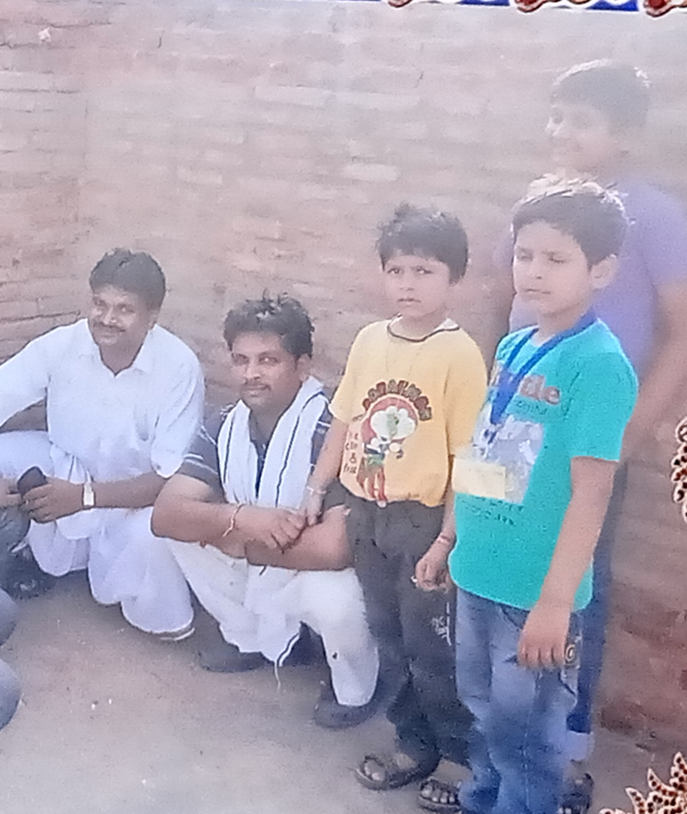
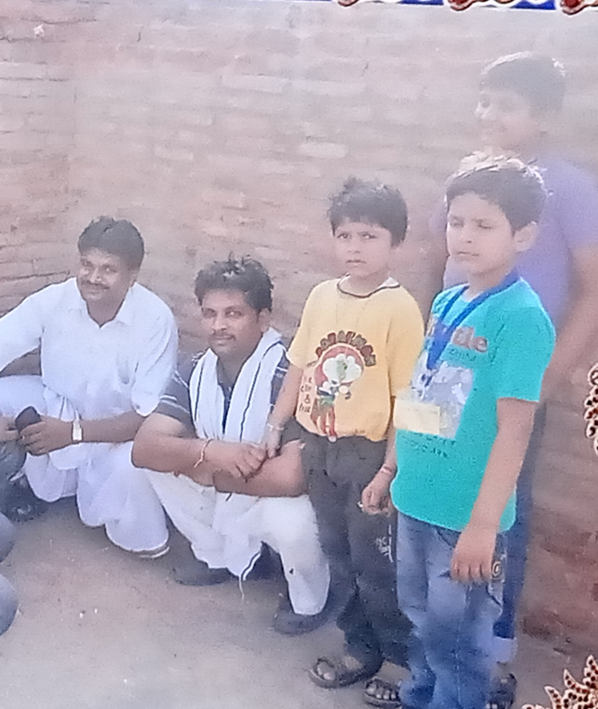
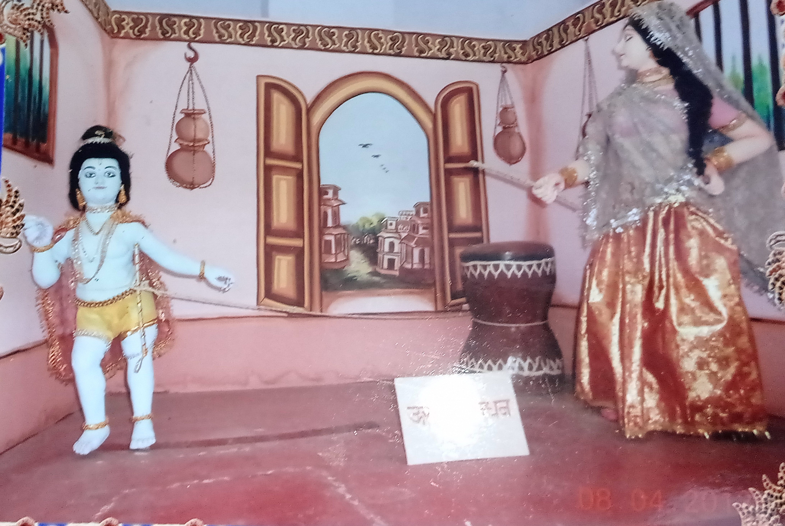
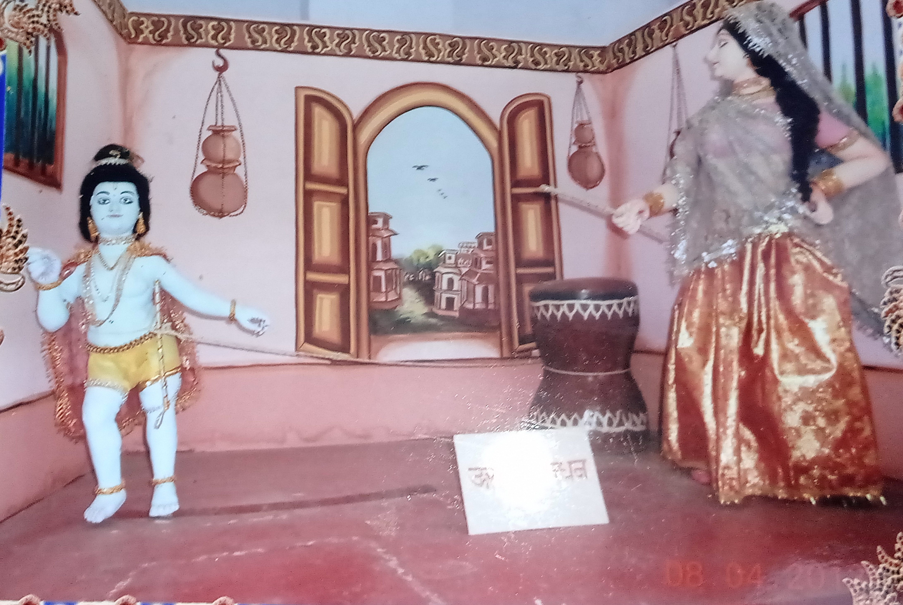

मैं 20 मार्च को अपने पूरे परिवार के साथ मंडरायल घूमने गया| हम ट्रेव्लर गाड़ी से हिंडोन से रवाना हुए| हम सीधे करौली मे कचौरी की दुकान पर रुके | फिर कचौरी लेकर निकल गये | फिर हम सीधे मंडरायल में एक मंदिर पर रुके |बहाँ हमने मंदिर मे पूजा की और पूजा कर के किले पर गये|किले पर चढ़ने में हमें बहुत मजा आया| फिर किले की एक गुफा में हमने पूजा की | और फोटो भी खीची | फिर हम बहां से नीचे उतरें और नीचे उतरकर मंदिर पर बापस आ गये और बहां फिर कचौरिया खायी| फिर हम मंदिर से निकलकर सीधे एक जगह गए ,कहाँ गये ये तो मुझे भी नहीं पता | फिर हमने बहाँ हमने भगबान पर चादर चढाई | और बहाँ हमने कोल्डड्रिंक पी और बकरियों के साथ खेले| फिर हम एक और जगह गये बहाँ भी हमने पूजा की और फिर पूजा कर के हमारे देवताओ पर गये और बहाँ हमने नीबू के पेड़ से नीबू तोड़े और बहां हमने पूजा की और बहाँ खाना खाया| और खाना खाकर सीधे चंबल देखने गये | बहाँ हमने बहुत मजा किया और बहुत सारे फोटो खीचे | बहाँ हमें रेत में बहुत मजा आया| और फिर पानी मे पत्थर तैराया| फिर हम बहाँ से हिंडोन के लिए रवाना हो गये | हम रात के लगभग 8 बजे बापस आ गये | ये मेरी सबसे बढ़िया यात्रा थी|
 

 

का दिन था |पापा ने अग्रोहा जाने का तय किया |हम फिर घर से पत्थर धर्मशाला गये | बहाँ अग्रोहा जाने के लिए बस खड़ी हुई थी | असल में बो बस मेरे पापा और उनके साथियो ने ही की थी | हम नाश्ता करके अग्रोहा के लिए रवाना हो गये | हमारी बस सीधे अग्रोहा धाम में रुकी | फिर हम बस से उतरें और होटल में गये होटल में हमने कमरा बुक किया और कमरें में आराम किया | फिर हम सब बच्चे होटल से बहार आकर एक पार्क में गये बहाँ हमने बहुत मजा किया और बहुत सारे झूलों में झूलें | फिर हम बापस होटल में चले गये फिर हमने होटल में खाना खाया | 1 घंटें बाद हम सबके साथ अग्रोहा के बड़े मंदिर में गये बहाँ बहुत साड़ी मूर्तियाँ थी | बहाँ हमने पूजा की और फिर मंदिर में स्थित गुफाओं में गये गुफाओं में भी बहुत सी मूर्तिया थी | फिर हम गुफा से बहार आकर बापस होटल में चले गये |फिर कुछ देर आराम करके हम मेले में गये | बहाँ बहुत सारे झूले थे हम सभी झूले और फिर बहाँ से नाव चलाने के लिया गये | बहाँ हमने साइकिल बाली नाव चलायी और बहुत सारा मजा किया | फिर हम बापस होटल में आया गये और फिर अगले दिन हम होटल के पास बाले स्व्मिन्ग्पूल में गये | बहाँ बहुत साड़ी फिसल्पत्तियाँ थी बहाँ हमने बहुत मजा किया और नहाकर बापस होटल चले गये | फिर हम कुछ देर बाद एक मंदिर में गये बहाँ मंदिर में एक कुंड था उस कुंड में हम सब नहाए और नहाकर पूजा की | फिर हम बहाँ से सीधे एक एतिहासिक ईटो के एक किले पर गये बहाँ में ईटों के किले पर चढ़ा और फोटो भी खिचबाई|फिर हम बहाँ से बापस होटल आ गये और खाना खाकर सो गये | अगले दिन हम बस में बैठकर बापस हिन्डॉन जाने के लिए रवाना हो गये | फिर हम रात को लगभग 7 बजे घर बापस आ गये | ये यात्रा मेरे लिए यादगार रहेगी |